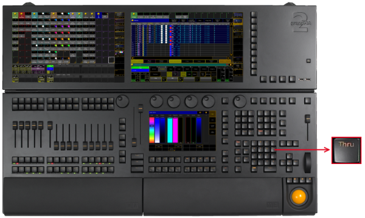

Thru Key
The key Thru is located in the command area on the right of the number key 6 in the number pad.

Location Key Thru
- Solely pressing Thru, enters the default keyword and the Thru keyword into the command.
[Channel]> Channel Thru
- If you press Thru after pressing another keyword, only the Thru keyword will be entered into the command line.
[Channel]> Fixture Thru